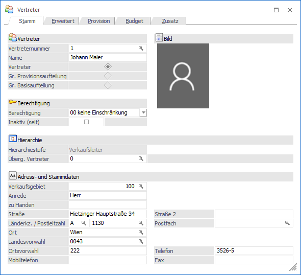
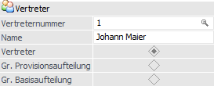
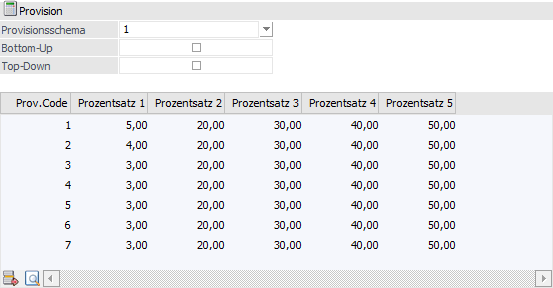
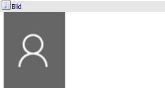
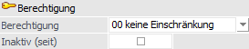
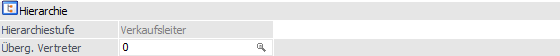
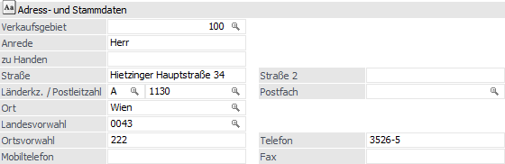
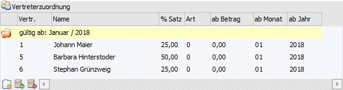
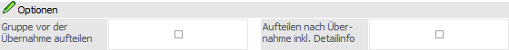

In dem Register "Stamm" kann der allgemeine Typ des Vertreters, sowie weitere zugehörige Informationen, erfasst werden.

Folgende Eingabefelder, Einstellungen und Informationen stehen zur Verfügung:
Vertreter

Ø Vertreternummer
An dieser Stelle wird die Nummer des Vertreters bzw. der Vertretergruppe hinterlegt.
Ø Name
Hier kann der Name des Vertreters bzw. der Vertretergruppe hinterlegt werden.
Ø Typ
Es stehen folgende Typen zur Auswahl:
ü Vertreter
Es handelt sich um eine Person,
welche aufgrund von Fakturen eine Provision erhält. Die Provisionssätze werden
dabei im Register "Provision" definiert.
ü Vertretergruppen mit Provisionsaufteilung
Es
handelt sich um eine Gruppe von Personen, welche aufgrund von Fakturen
Provisionen erhalten. Welche Vertreter die Gruppe beinhaltet, kann in der
Tabelle "Vertreter" definiert werden.
Die Provisionssätze für alle Vertreter
werden im Register "Provision" hinterlegt.
Beispiel Provisionsaufteilung
Die
Hinterlegung im Register "Provision" lautet wie folgt:

ü Vertretergruppen mit Basisaufteilung
Es
handelt sich um eine Gruppe von Personen, welche aufgrund von Fakturen
Provisionen erhalten. Welche Vertreter die Gruppe beinhaltet, kann in der
Tabelle "Vertreter" definiert werden.
Die Provisionssätze ermitteln sich aus
den Einstellungen der Vertreter selbst.
Beispiel Basisaufteilung
Umsatz im
Beleg:
10.000,-
Provisionscode im
Artikel:
1
Vertretergruppe "100"
Anteil Vertreter
1:
10%
Anteil Vertreter
2:
40%
Anteil Vertreter
3:
50%
Daher Provisionsbasis für
1:
1.000,-
Daher Provisionsbasis für
2:
4.000,-
Daher Provisionsbasis für
3:
5.000,-
Provisionssatz für PC 1 bei Vertreter1:
4%
Provisionssatz für PC 1 bei Vertreter1:
3%
Provisionssatz für PC 1 bei Vertreter1:
8%
Provision für Vertreter
1:
40,- (4% von 1000,-)
Provision für Vertreter
2:
120,- (3% von 4000,-)
Provision für Vertreter
3:
400,- (8% von 5000,-)
Achtung
Die Auswahl des Typs kann nur bei der Neuanlage eines Objektes getätigt werden.
Hinweis
Temporäre Vertretergruppen, welche über die Belegerfassung generiert werden, können im Vertreterstamm nicht geladen werden. Sie werden ausschließlich in der Belegbearbeitung editiert.
Bild

An dieser Stelle wird das Bild des Vertreters dargestellt. Ein neues Bild kann durch Anwahl des aktuellen Bilds oder mit Hilfe des Buttons "Bildersuche" zugewiesen werden.
Berechtigung

Ø Berechtigung
Für jeden Vertreter kann ein Berechtigungsprofil vergeben werden. Wenn der Anwender einen Vertreter aufruft, wird geprüft, ob der Anwender einer Benutzergruppe zugeordnet wurde, welche in dem jeweiligen Profil enthalten ist und ob somit eine Bearbeitung erlaubt wäre (nähere Informationen entnehmen Sie bitte dem WinLine ADMIN - Handbuch).
Hinweis
Benutzern des Typs "Administrator" oder mit der Administratorenberechtigung "Benutzeradministrator" steht in der Auswahlbox der Punkt ">> Neues Profil" zur Verfügung. Über die Anwahl dieses Eintrags kann in der Folge ein neues Berechtigungsprofil angelegt werden.
Ø Inaktiv (seit)
Durch Aktivieren des Kennzeichens "inaktiv (seit)" kann der Vertreter bzw. die Vertretergruppe nicht mehr in Belegen verwendet werden. Eine Nutzung im Programmbereich "Vertreter buchen" ist hingegen weiterhin möglich.
Hinweis
Wird das Kennzeichen bei Vertretern gesetzt, welche auch in Vertretergruppen enthalten sind, so erfolgt eine entsprechende Abfrage, ob der Vertreter aus den Vertretergruppen entfernt werden soll.
Hierarchie

Ø Hierarchiestufe
An dieser Stelle wird die aktuelle Hierarchiestufe angezeigt. Diese ergibt sich aus dem "Übergeordneten Vertreter".
Hinweis
Die Betitelung der Hierarchiestufen kann in den Applikationsparametern definiert werden.
Ø Überg. Vertreter
In dem Feld "Übergeordnete Vertreter" kann ein bereits angelegter Vertreter zugeordnet werden. Dieser bestimmt dadurch die Hierarchiestufe des aktiven Vertreters. D.h. es wird geprüft ob der "Übergeordnete Vertreter" befüllt ist und wenn dem so ist, dann wird der aktive Vertreter eine Stufe unter dem "Übergeordneten Vertreter" eingeordnet. Bleibt das Feld leer, so befindet sich der aktive Vertreter in der höchsten Stufe.
Hinweis
Durch die Provisionssatz-Einstellung "Bottom-Up" bzw. "Top-Down" können die über- bzw. untergeordneten Vertreter ebenfalls mit einer Provision bedacht werden.
Adress- und Stammdaten

Dieser Bereich steht nur bei Vertretern zur Verfügung. Für diese können in diesem Bereich individuelle Informationen, wie z.B. "Anrede", "Straße" oder "Ort", hinterlegt werden.
Tabelle "Vertreter"

Diese Tabelle steht nur bei Vertretergruppen zur Verfügung. Für diese können hier die Mitglieder der Vertretergruppe definiert werden.
Ø Vertreternummer
Eingabe der Vertreter bzw. weiterer Vertretergruppen, die einen Provisionsanteil erhalten.
Ø % Satz
Anteil des Vertreters oder der weiteren Gruppe an der Gesamtprovision. Die Höhe der Gesamtprovision ist abhängig vom Provisionssatz der Gruppe. In welcher Form der Wert eingegeben wird (Prozentsatz oder Verhältniszahl), wird in den FAKT-Parametern gesteuert.
Hinweis
Der Provisionssatz wird im Bereich "Provision" gespeichert.
Ø Art
In dieser Spalte kann angegeben werden, ob es sich in der jeweiligen Zeile um einen Prozentsatz, eine Verhältniszahl, um einen Fixbetrag oder einen Staffelbetrag handelt.
Ø ab Betrag
Wurde als "Art" der "2 - Staffelbetrag" definiert, so kann in dieser Spalte jener Betrag (Gruppenprovisionsbetrag) angegeben werden, ab welchen der hinterlegte "Fixbetrag" (einzugeben in der Spalte "% Satz") gelten soll. Bei dieser Verteilungsart kann ein und derselbe Vertreter mehrfach erfasst werden. Jedoch kann die Verteilungsart nicht geändert werden.
Ø ab Monat / ab Jahr
Zusätzlich ist es möglich in der ersten Zuweisung eines Vertreters bzw. einer Vertretergruppe einen Gültigkeitszeitraum für die Aufteilung festzulegen. Dieses Datum wird anschließend in der Hauptzeile dargestellt und in weiterer Folge automatisch an die weiteren Einträge vererbt.
Wird kein "gültig ab Jahr" angegeben (dieses ist der Standard bei Neuanlage von Gruppen), gilt die Gruppe uneingeschränkt solange kein weiterer Gültigkeitsbereich definiert wird.
Hinweis
Beim Drucken eines Beleges werden unter Berücksichtigung der Einstellung in den FAKT-Parametern (Fakturendatum oder Lieferdatum) diese Zeiträume für die Aufteilung herangezogen. Sollte kein Gültigkeitszeitraum für die Aufteilung zutreffen, so wird die Vertretergruppe, obwohl eine sofortige Aufteilung lt. Vertreterstamm erfolgen sollte, nicht aufgeteilt!
Tabellenbuttons
Ø Neue "gültig ab" Gruppe
Durch Anwählen dieses Buttons kann ein neuer "gültig ab" Bereich eingefügt werden. Zusätzlich erfolgt hierzu eine entsprechende Meldung.
Ø Vertreterzeile einfügen
Mit diesem Button kann eine neue Vertreterzeile in der Tabelle eingefügt werden.
Ø Zeile oder "gültig ab"-Bereich löschen
Je nach Position in der Tabelle kann durch Drücken dieses Buttons eine Vertreterzeile oder ein gesamter Gültigkeitsbereich entfernt werden.
Ø Ausgabe Excel
Durch Anwahl des Buttons "Ausgabe Excel" wird der Inhalt der Tabelle an Microsoft Excel übergeben.
Ø Tabelleneinstellungen speichern
Die Spalten einer Tabelle können grundsätzlich an beliebige Positionen verschoben, bzw. in der Breite entsprechend angepasst werden. Durch Anwahl des Buttons "Tabelleneinstellungen speichern" werden die Einstellungen benutzerspezifisch gespeichert und bei dem nächsten Aufruf des Programmpunktes wieder vorgeschlagen.
Ø Gesamteinstellungen speichern
Im Gegensatz zu "Tabelleneinstellungen speichern" können mit "Gesamteinstellungen speichern" mehrere Tabellenaufbauten gespeichert und nach Wunsch geladen werden. Zusätzlich werden Sonderfunktionen der Tabelle (z.B. "Spalte gruppieren") ebenfalls bei der Speicherung bedacht.
Optionen

Diese Optionen stehen nur bei Vertretergruppen zur Verfügung.
Ø Gruppe vor der Übernahme aufteilen
Ist diese Option aktiviert, so wird bereits beim Editieren im Belegerfassen bzw. beim Belegdruck und nicht erst bei der Provisionsübernahme die Gruppe auf ihre Einzelvertreter aufgeteilt.
Ø Aufteilen nach der Übernahme inkl. Detailinformationen
Für nachträglich aufzulösende Vertretergruppen, die diese Option gesetzt haben, wird pro Journalzeile die Aufteilung inkl. aller Informationen durchgeführt. D.h. die Informationen, welche im Normalfall komprimiert werden und somit nicht mehr zur Verfügung stehen, bleiben in diesem Fall erhalten. Jede dieser Zeilen kann auch gesondert storniert werden.
Achtung
Diese Option kann nur aktiviert werden, wenn die Checkbox "Gruppe vor der Übernahme aufteilen" nicht gesetzt ist.